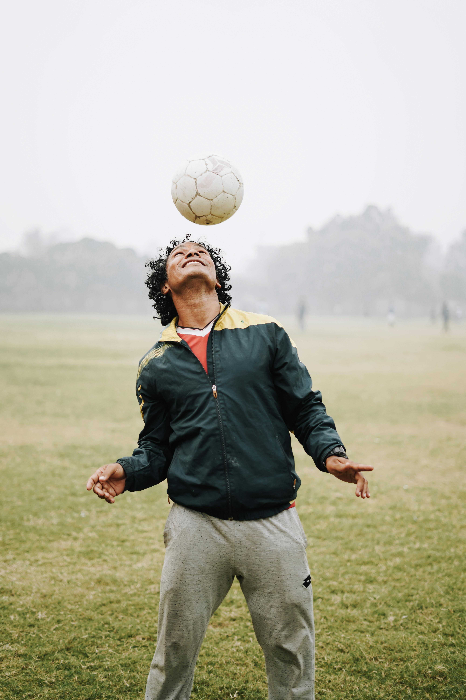

Hobbies
Traveling

I love discovering new places, cultures, and people. Traveling broadens my perspective and fuels my creativity and curiosity in both life and tech.
Reading
Books are my daily fuel for growth. Whether it’s self-improvement, tech, or inspirational stories, reading helps me stay sharp, focused, and constantly evolving.

Swimming
Swimming keeps my body active and my mind clear. It teaches me discipline, balance, and endurance — qualities I bring to my work and learning.
Soccer
Playing football is more than a sport for me — it’s teamwork, strategy, and passion. It energizes me and keeps my spirit competitive and driven.
